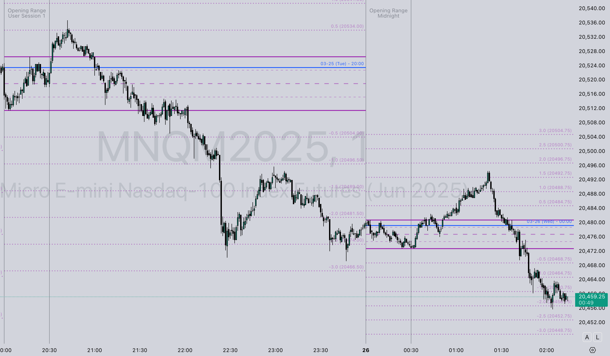
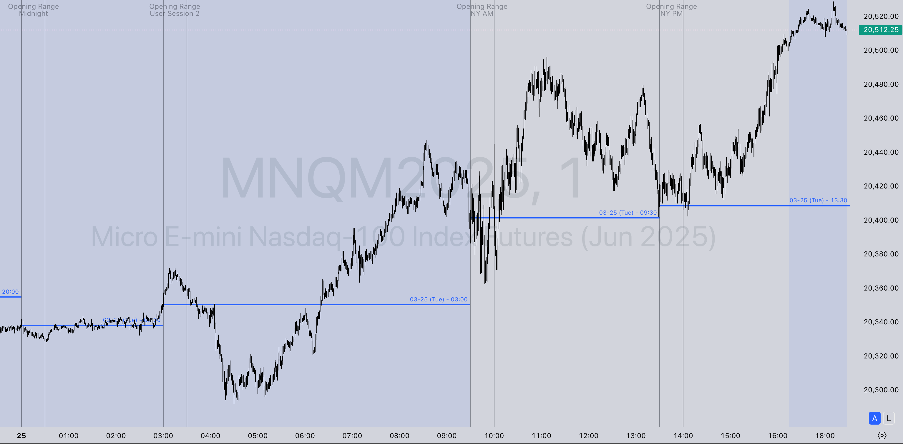

Performance Optimized: This page uses advanced caching headers to ensure fast loading of static assets. Images and resources are cached for optimal performance.
Available Indicators
This collection includes several powerful TradingView indicators based on Inner Circle Trader (ICT) concepts, designed to help traders identify key market structures and opportunities.
Opening Range Projections (ORP)

- Multiple session support (Midnight, NY AM, NY PM)
- User-defined session times
- Range high/low projections
- Quadrant levels
- Customizable extend options
Opening Price Levels

- Session opening price identification
- Key reference levels
- Multiple timeframe support
Range High/Low Analysis
- Session range identification
- High and low boundary marking
- Support and resistance levels
Swing High/Low Ranges
- Swing point identification
- Range boundary analysis
- Market structure visualization
Session Analysis
- Multiple trading session support
- Session boundary visualization
- Time-based analysis tools
Price Projections
- Future price level projections
- Extension and retracement levels
- Target identification
Quadrant Levels
- Range quadrant divisions
- 25%, 50%, 75% level marking
- Precision entry/exit points
Features
- Based on proven Inner Circle Trader (ICT) methodologies
- Multiple customizable session types
- Advanced range projection algorithms
- User-friendly configuration options
- Compatible with TradingView Pine Script v5/v6
- Optimized for performance with caching headers
Usage
These Pine Script indicators can be imported into TradingView by copying the code from the respective .pine files in this repository. Each indicator includes comprehensive documentation and customizable parameters to suit different trading styles and preferences.